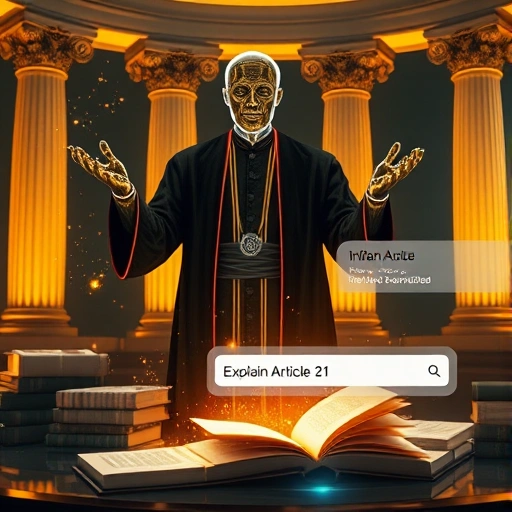

Waseem M Ansari
Ingénieur en solutions IA/ML spécialisé dans la construction de systèmes IA évolutifs et conformes à la confidentialité pour les applications d'entreprise. Je développe des solutions IA modulaires conformes au RGPD qui aident les entreprises à obtenir des améliorations d'efficacité de 25 à 40% tout en maintenant des normes strictes de protection des données.
À propos de moi
Ingénieur en solutions IA axé sur les résultats avec une formation unique en droit et en science des données. Je suis spécialisé dans le développement de systèmes IA respectueux de la vie privée qui respectent les normes de protection des données tout en offrant un impact commercial mesurable. Ma formation juridique et technique garantit des solutions IA qui sont non seulement techniquement solides mais aussi éthiquement conformes et respectueuses du RGPD.
Je suis spécialisé dans le fine-tuning des LLM, les implémentations RAG et le déploiement de modèles ML prêts pour la production. Je suis actuellement une formation intensive à l'IIT Madras en techniques ML/IA avancées, avec une expérience pratique des architectures Transformer, des bases de données vectorielles et des solutions IA génératives. Mon expertise couvre PyTorch, TensorFlow et l'écosystème Hugging Face pour la construction d'applications IA évolutives.
Réalisations clés:
- Conception de systèmes IA haute performance réalisant une réduction des coûts de 35% et une amélioration du débit 2x
- Développement et déploiement de plus de 10 solutions IA prêtes pour la production
- Contribution active à la communauté IA via des articles techniques et des discussions sur LinkedIn
Projets sélectionnés
-
Problème: Les développeurs ont souvent du mal à parcourir la documentation des bibliothèques et des API lorsqu'ils n'ont besoin que d'un exemple de code concis.
Solution: Implémentation d'un stockage vectoriel temporaire en mémoire avec chunking pour une récupération immédiate.
Impact: Accélération des flux de travail des développeurs grâce à des exemples de code ciblés.
Fonctionnalités clés: Chat intelligent avec LLM, Analyse de PDF & Web, Stockage vectoriel en mémoire.
Tech Stack: Python, FastAPI, LangChain, Mistral AI, InMemoryVectorStore, Modern HTML/CSS/JS, Docker, Google Cloud Run. -
 Problème: Nombreux utilisateurs doivent se connecter pour utiliser les outils de génération d'images et manquent d'automatisation API.
Problème: Nombreux utilisateurs doivent se connecter pour utiliser les outils de génération d'images et manquent d'automatisation API.
Solution: Construction d'une plateforme de génération d'images avec points d'API REST.
Impact: Optimisation de l'automatisation et de l'intégration pour les flux de travail de design.
Fonctionnalités clés: Génération texte-vers-image, API REST, Support multi-modèles.
Tech Stack: Python, FastAPI, Azure Web Apps, Hugging Face Diffusers, PIL, Docker. -
 Problème: Projet de week-end — beaucoup de chatbots sont trop polis et standardisés.
Problème: Projet de week-end — beaucoup de chatbots sont trop polis et standardisés.
Solution: Implémentation d'un chatbot contextuel avec réponses en streaming et personnalité délibérément impertinente.
Impact: Prototype démonstratif pour la conception de persona conversationnel.
Fonctionnalités: Réponses en streaming, Réponses basées sur la personnalité, Mémoire persistante.
Tech Stack: Python, Mistral AI, LangGraph, Streamlit, Docker. -
 Problème: COVID-19 a créé un besoin de surveillance automatisée du port du masque.
Problème: COVID-19 a créé un besoin de surveillance automatisée du port du masque.
Solution: Approche par transfer learning avec architecture VGG16.
Impact: 95% de précision dans la détection en temps réel.
Fonctionnalités: Détection en temps réel, Classification trois classes, Transfer learning.
Tech Stack: Python, PyTorch, VGG16, OpenCV, NumPy, Matplotlib. -
 Problème: La gestion manuelle du calendrier est fastidieuse et chronophage.
Problème: La gestion manuelle du calendrier est fastidieuse et chronophage.
Solution: Google OAuth pour accès sécurisé aux données calendrier et assistant vocal.
Impact: Démonstration de la faisabilité de la gestion vocale du calendrier.
Fonctionnalités: Entrée vocale & texte, Intégration Google Calendar, Correspondance intelligente.
Tech Stack: FastAPI, LangGraph, LangChain, Google Calendar API, SpeechRecognition. -

Problème: Les avocats ont besoin d'un lieu unique pour la recherche juridique.
Solution: Système RAG recherchant dans le stockage vectoriel et les bases gouvernementales.
Impact: Optimisation de la recherche juridique et accès gratuit aux informations légales.
Fonctionnalités: Aperçus juridiques instantanés, Recherche IA, Focus droit indien.
Tech Stack: Python, FastAPI, Streamlit, ChromaDB, MistralAI, LangChain, Docker. -
Problème: Difficulté à trouver des questions d'entraînement personnalisées et réalistes.
Solution: Assistant IA pour simulations d'entretiens personnalisées avec Mistral AI.
Impact: Plus de 100 utilisateurs ont amélioré leurs compétences.
Fonctionnalités: Génération de questions personnalisées, Réponses détaillées.
Tech Stack: Streamlit, Python, Mistral AI, Custom CSS. -
 Problème: Incertitude dans l'estimation des prix des motos d'occasion.
Problème: Incertitude dans l'estimation des prix des motos d'occasion.
Solution: Prédicteur de prix ML utilisant des modèles ensemble avancés.
Impact: 92% de précision dans la prédiction des prix.
Fonctionnalités: Prédiction précise des prix, Insights IA, Interface conviviale.
Tech Stack: Streamlit, Python, Scikit-learn, XGBoost, ColumnTransformer. -
 Problème: Compétition IIT Madras: 10 problèmes d'analyse en 30 minutes.
Problème: Compétition IIT Madras: 10 problèmes d'analyse en 30 minutes.
Solution: Développement d'un solveur automatisé obtenant un A+.
Impact: Démonstration de la puissance des agents IA autonomes.
Fonctionnalités: Exécution de code généré par IA, Traitement multi-format.
Tech Stack: Python, FastAPI, Mistral API, Pandas, pdfplumber, Docker. -
Problème: Besoin d'une plateforme cloud native fiable pour les journaux photos.
Solution: Application sans serveur sur Google Cloud Run.
Impact: 99,9% de disponibilité et mise à l'échelle sans effort.
Fonctionnalités: Téléchargements d'images, Support multi-utilisateurs, Flux chronologique.
Tech Stack: Flask, Google Cloud SQL, Google Cloud Storage, Google Cloud Run. -
 Problème: Difficulté à détecter les contenus dupliqués sur les plateformes.
Problème: Difficulté à détecter les contenus dupliqués sur les plateformes.
Solution: Système de similarité textuelle ML avec Word2Vec et XGBoost.
Impact: 88% de précision dans la détection des doublons.
Fonctionnalités: Analyse de similarité sémantique, Scoring de confiance.
Tech Stack: Python, Flask, XGBoost, Word2Vec, Docker, HTML + CSS. -
 Prédicteur de Menaces Système (Top 5% Kaggle) [Kaggle]Problème: Compétition Kaggle IIT Madras pour développer un modèle ML de détection.
Prédicteur de Menaces Système (Top 5% Kaggle) [Kaggle]Problème: Compétition Kaggle IIT Madras pour développer un modèle ML de détection.
Solution: Développement d'une technique ensemble pour le top 5%.
Impact: Démonstration d'expérimentation ML avancée.
Fonctionnalités: Feature engineering, Modélisation ensemble, Classement Kaggle.
Tech Stack: Python, Random Forest, XGBoost, Pandas, Scikit-learn.
Expérience professionnelle
-
Ingénieur IA/ML & Développeur de Solutions — Freelance/Projets Indépendants (Dehradun, Inde)
• Poursuite du diplôme IIT Madras en science des données tout en étudiant de manière approfondie les sujets avancés.
• Conception et déploiement de multiples applications IA/ML de bout en bout.
• Livraison d'implémentations de qualité production avec Docker, FastAPI, Flask, Streamlit et Google Cloud/Azure.
• Top 5% sur Kaggle dans un défi de détection de cybersécurité.
• Construction active d'un portfolio de projets diversifié.
Formation
- Diplôme en Science des Données
Cours: ML, DL, GenAI, Algèbre linéaire, Statistiques, Business Analytics, Outils pour la Science des Données.
Note: CGPA 8+ - Licence en Droit (LLB, 5 ans)
Cours: Constitution, Droit civil et pénal, Droit procédural, PI, Droit bancaire, Droit environnemental.
Certifications
- Microsoft Azure AI Essentials - Microsoft (2025)
- Understanding Google Cloud Platform – IIT Madras (2025)
- Google Digital Marketing - Google (2020)
- Marketing Digital – Codestar & Udemy (2020)
- Agent Immobilier – Dubai Real Estate Institute (2015)
Langues
- Anglais — IELTS 7 Band (Niveau CECRL C1)
- Ourdou — Langue maternelle (Niveau CECRL C2)
- Hindi — Langue maternelle (Niveau CECRL C2)
- Allemand — Basique (Niveau CECRL A1) - En cours d'apprentissage
Publications & Leadership d'Opinion
- Les hallucinations dans la recherche juridique IA: Le cauchemar d'un avocat?
Article sur les hallucinations IA dans la recherche juridique. - Adaptation des stratégies d'exportation pour les tapis artisanaux indiens
Stratégie d'exportation basée sur les données pour l'industrie du tapis indien.